용접기사 (2003-08-10 기출문제)
1과목: 기계제작법
1. 금속을 소성가공할 때 열간가공과 냉간가공의 구별은 어떤 온도를 기준으로 하는가?
- 담금질 온도
- 변태 온도
- 재결정 온도
- 단조 온도
(정답률: 100%)

2. 아래 그림의 테이퍼의 값은 얼마인가?
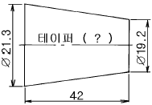
- 1/10
- 1/15
- 1/20
- 1/30
(정답률: 알수없음)
3. 구성인선(built-up edge)의 발생에 대하여 틀리게 설명한 것은?
- 바이트의 윗면 경사각이 클수록 감소한다.
- 칩(chip)의 유동 저항이 클수록 증가한다.
- 칩의 두께가 얇을수록 감소한다.
- 고속 절삭일수록 증가한다.
(정답률: 알수없음)
4. 아크용접에서 아크 길이가 일정할 때, 아크 전압(電壓)과 아크 전류(電流)와의 관계 설명이 옳은 것은?
- 전압은 전류에 비례한다.
- 전압은 전류증가에 따라 지수곡선 모양으로 변화한다.
- 전압은 전류증가에 따라 감소하다가 다시 서서히 증가 한다.
- 전압과 전류는 직접 상관이 없다.
(정답률: 알수없음)
5. 목형에 라운딩 (rounding)을 하는 주된 목적은?
- 모양을 아름답게 하기 위하여
- 목형제작을 용이하게 하기 위하여
- 주물이 응고할 때 주형의 모서리 진 부분에서 재질이 약해지는 것을 방지하기 위하여
- 형상이 복잡한 주물의 변형을 방지하기 위하여
(정답률: 알수없음)
6. 밀링 머신 작업에서 상향 절삭의 단점을 열거한 것이다. 틀린 항은?
- 공작물을 치켜 올려 불안정하다.
- 날끝이 마모되기 쉽다.
- 가공면이 깨끗하지 못하다.
- 절삭칩이 날사이에 끼어들기 쉽다.
(정답률: 알수없음)
7. 원래의 기본장치에 분할대, 슬로팅 장치, 회전테이블 등을 부착하여 메탈 슬리팅 등의 작업에 적합한 공작기계는?
- 호빙 머신(hobbing machine)
- 드릴링 머신(drilling machine)
- 밀링 머신(milling machine)
- 평삭기(planer)
(정답률: 알수없음)
8. 주물을 급냉하여, 고속회전하는 베벨기어와 같이 내(耐) 마모성이 큰 주물을 제작할 때 가장 적합한 주조법은?
- 칠드주조법
- 원심주조법
- 셀주조법
- 다이캐스팅
(정답률: 알수없음)
9. 곧은 날을 갖는 직선절단기에서 전단각에 관한 설명 중 옳지 않은 것은?
- 전단각(shear angle)이란 아래날에 대한 윗날의 기울기 각도이다.
- 전단각이 크면 절단된 판재의 끝면이 고르지 못하다.
- 전단각은 일반적으로 박판에는 크게, 후판에는 작게 한다.
- 절단 날에 전단각을 두는 것은 절단할 때, 충격을 감소시키고 절단소요력을 감소시키기 위한 것이다.
(정답률: 알수없음)
10. 선반의 전 소비동력(N)은 다음중의 3가지 동력을 합한 것이다. 이 3가지에 해당되지 않는 것은?
- 손실동력(NL)
- 정미절삭동력(NP)
- 이송동력(NF)
- 회전동력(NR)
(정답률: 알수없음)
11. 수치제어 선반에서 지름이 다른 한 개의 축을 선삭할 때 사용하는 제어방식은?
- 깊이결정 수치제어
- 위치결정 직선절삭 수치제어
- 윤곽절삭 수치제어
- 직선보간
(정답률: 알수없음)
12. 선반 주축의 표면경화법으로 가장 좋은 것은?
- 침탄법
- 질화법
- 화염 경화법
- 고주파 경화법
(정답률: 알수없음)
13. 피로강도의 증가에 효과가 있는 가공작업은?
- 버핑(buffing)
- 숏 피닝(shot peening)
- 버니싱(burnishing)
- 나사 전조(thread rolling)
(정답률: 알수없음)
14. 특수 드로잉 가공에서 다이에 고무를 사용하는 성형 가공법은 어느 것인가?
- 액압성형법(hydroforming)
- 마폼법(marforming)
- 벌징법(bulging)
- 폭발성형법(explosive forming)
(정답률: 알수없음)
15. 주물사에 가장 많이 포함된 주성분은?
- Mg0
- Fe203
- Aℓ203
- Si02
(정답률: 알수없음)
16. 주조시, υ : 유속(㎝/sec), h : 탕구의 높이[쇳물이 채워진 높이](㎝), g : 중력의 가속도 980 ( ㎝/sec2 ), C : 유량계수일 때, 탕구의 높이와 유속과의 관계로 다음중 옳은 식은?
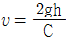
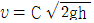
- υ = C(2gh)2
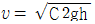
(정답률: 알수없음)
17. 가는선(細線)의 접합이나 특수한 이종 금속간(Ti, Zr,Ta, Cd, Be, Ge 등과 스테인레스강, 동합급 간)의 접합에 극히 유용하며, 발진기, 진동자, 진동전달기구, 용접팁, 가압기구 및 자동제어장치 등이 있는 용접법은?
- 스터드 용접법(stud welding)
- 마찰 용접법(friction welding)
- 고주파 용접법(induction welding)
- 초음파 용접법(ultrasonic welding)
(정답률: 알수없음)
18. 100mm 의 사인바에 의해서 30° 를 만드는 데 필요한 블록 게이지를 준비할 때, 필요없는 것은?
- 4.5
- 5.5
- 20
- 40
(정답률: 알수없음)
19. 연삭숫돌의 로우딩(loading)현상에서 숫돌입자를 제거하려고 한다. 쓰이는 공구는 다음중 어느 것인가?
- 칼날
- 샌드페이퍼
- 스크레이퍼
- 드레서
(정답률: 알수없음)
20. 주물조형을 할 때 사용되는 도가니로(爐)에서 도가니의 번호는 무엇을 뜻하는가?
- 도가니의 중량
- 1회의 동(구리)의 최대 용해량
- 도가니의 높이
- 도가니의 내경
(정답률: 알수없음)
2과목: 재료역학
21. 다음 그림과 같이 연속보가 균일 분포하중(q)을 받고 있을 때 A점의 반력은?
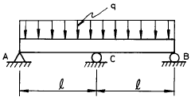
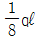
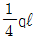
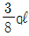
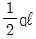
(정답률: 알수없음)
22. 코일 스프링이 600N 의 힘이 작용되어 0.03m 의 변형을 일으켰다. 이 때 이 스프링에 저장된 탄성에너지는?
- 18Nㆍm
- 6Nㆍm
- 9Nㆍm
- 12Nㆍm
(정답률: 알수없음)
23. 그림과 같이 지름 50㎜ 의 연강봉의 일단을 벽에 고정하고, 자유단에 600N 의 하중을 작용시킬 때 발생하는 주응력과 최대 전단응력은 각각 몇 MPa 인가?
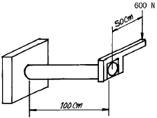
- 주응력 : 51.8, 최대전단응력 : 27.3
- 주응력 : 27.3, 최대전단응력 : 51.8
- 주응력 : 41.8, 최대전단응력 : 27.3
- 주응력 : 27.3, 최대전단응력 : 41.8
(정답률: 알수없음)
24. 재료시험에서 연강재료의 탄성계수 E = 210GPa 을 얻었을 때 포아송 비가 0.303이면 이 재료의 전단 탄성계수 G는 몇 GPa 인가?
- 8.⑤
- 10.5
- 35
- 80.5
(정답률: 알수없음)
25. 그림과 같이 원추형 봉이 연직으로 매달려 있다. 길이 ℓ, 고정단의 직경 d, 비중량이 γ 인 경우 봉의 자중에 의한 신장량은?
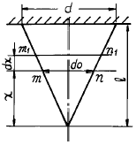
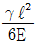
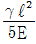
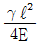
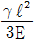
(정답률: 알수없음)
26. 양단이 핀으로 고정되어 있고, 정사각형의 단면 25mm x 25mm, 길이 1.8m인 기둥에서의 오일러식에 의한 임계 하중은 몇 kN 인가? (단, 탄성계수 E = 70GPa 이다.)
- 1.302
- 2.604
- 3.470
- 6.941
(정답률: 알수없음)
27. 그림과 같은 단면의 보에서 X축에 대한 단면계수는?
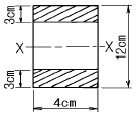
- 72㎝3
- 78㎝3
- 84㎝3
- 504㎝3
(정답률: 알수없음)
28. σx = 700MPa, σy = -300MPa 가 작용하는 평면응력 상태에서 최대 수직응력과 최대 전단응력은?
- σmax = 700MPa, τmax = 300MPa
- σmax = 600MPa, τmax = 400MPa
- σmax = 500MPa, τmax = 700MPa
- σmax = 700MPa, τmax = 500MPa
(정답률: 알수없음)
29. 다음 그림에 대한 설명 중 틀린 것은?
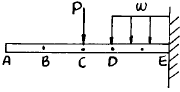
- A, B, C점의 기울기는 전부 같다.
- 구간 CD에서의 전단력은 선형으로 변화한다.
- E점의 경사각은 0이다.
- CD 구간에 작용하는 모멘트는 선형으로 변화한다.
(정답률: 알수없음)
30. 반지름이 r 이고 벽 두께가 t 인 얇은 벽의 구형 용기가 P 의 균일 분포 내압을 받고 있을 때 그 벽속에 발생하는 막응력(membrane stress)은 얼마인가?
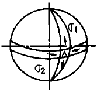
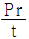
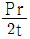
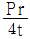
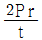
(정답률: 알수없음)
31. 보의 탄성곡선의 곡률은 어느 것인가? (단, M : 굽힘모멘트, E : 탄성계수, Ⅰ: 단면2차모멘트)
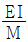
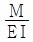
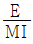
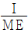
(정답률: 알수없음)
32. 지름 4㎝ 의 둥근봉 펀치다이스에서 두께 t = 1㎝ 의 강판에 펀칭구멍을 뚫을 때, 판의 전단강도가 τu = 400MPa 라면 펀치 해머에 가해져야 하는 펀칭력은 몇 kN 인가?
- 251.5
- 502.6
- 754.5
- 1006
(정답률: 알수없음)
33. 그림에서 인장력 12kN 이 작용할 때 지름 20mm 인 리벳 단면에 일어나는 전단 응력은 몇 MPa 인가?
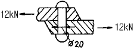
- 68.2
- 38.2
- 23.8
- 32.0
(정답률: 알수없음)
34. 중공(中空)의 강실린더 안에 구리 원통이 들어있고 높이는 500mm로 동일하다. 강실린더의 단면적은 2000mm2 이고, 구리 원통의 단면적은 5000mm2이다. 구리 원통이 모든 하중을 받게하기 위해 필요한 온도상승은 최소 몇 ℃ 인가? (단, 하중은 200kN이며, 하중을 받는 판은 변형하지 않는다. 구리 E = 120GN/m2, α = 20 x 10-6/℃, 철 E = 200GN/m2, α = 12 x 10-6/℃)
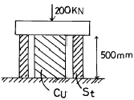
- 38
- 40
- 42
- 45
(정답률: 알수없음)
35. 내경이 30mm 이고 외경이 42mm 인 중공축이 100kW 의 동력을 전달하는데 이용된다. 전단응력이 50MPa 을 초과하지 않도록 축의 회전진동수를 구하면 몇 Hz 인가?
- 26.6
- 29.6
- 33.4
- 37.8
(정답률: 알수없음)
36. 길이가 L이고 직경이 d인 축에 굽힘 모멘트 M과 비틀림 모멘트 T가 동시에 작용하고 있다면 최대 전단응력은?
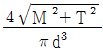
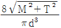
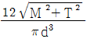
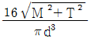
(정답률: 알수없음)
37. 길이 L인 회전축이 비틀림 모멘트 T를 받을 때 비틀림각도(θ°)는?
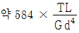
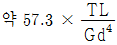
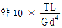
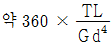
(정답률: 알수없음)
38. 입방체가 그 표면에 외부로부터 균일한 압력 P를 받고 있을 때, 체적 변화율을 표현한 식은? (단, μ는 프와송비, E는 탄성계수이다.)
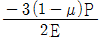
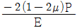
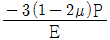
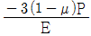
(정답률: 알수없음)
39. 그림과 같은 복합 막대가 각각 단면적 AAB = 100㎜2, ABC = 200㎜2을 갖는 두 부분 AB와 BC로 되어있다. 막대가 100kN의 인장하중을 받을 때 총 신장량을 구하면? (단, 재료의 탄성계수(E)는 200GPa이다.)
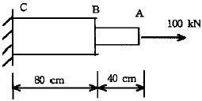
- 2mm
- 4mm
- 6mm
- 8mm
(정답률: 알수없음)
40. 지름이 d이고 길이가 L인 환봉이 있다. 이 환봉에 압축하중 P가 작용하여 지름이 d0로 변했다면, 환봉 재료의 포아송비는 어떻게 표현되는가? (단, 환봉의 탄성계수는 E이다.)
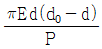
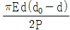
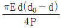
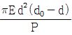
(정답률: 알수없음)
3과목: 용접야금
41. austenite변태에 영향을 주는 인자로서 가장 적게 영향을 미치는 것은?
- 강의 화학성분
- 오스테나이트 결정입도
- 냉각속도
- 페라이트와 펄라이트 입도
(정답률: 알수없음)
42. 스텐레스강 중 저온 및 고온에서 기계적 성질이 가장 우수한 것은 어느 것인가?
- 마텐사이트 스텐레스강
- 페라이트 스텐레스강
- 오스테나이트 스텐레스강
- 2상 스텐레스강
(정답률: 알수없음)
43. 주철제품을 용접한 후 일반적인 열처리 방법은?
- normalizing
- annealing
- quenching
- tempering
(정답률: 알수없음)
44. 용접에서의 탄소당량이란 무엇을 뜻하는가?
- 강재의 망간과 규소의 비를 나타낸다.
- 주철의 흑연 함유량을 나타낸다.
- 용접성을 나타낸 것으로 이 값이 클수록 용접이 용이하다.
- 용접성을 나타낸 것으로 이 값이 클수록 용접이 곤란하다.
(정답률: 알수없음)
45. 열간 가공의 잇점을 나열한 것으로 틀린 것은?
- 결정립자의 미세화
- 방향성이 있는 주조 조직의 제거
- 충격치, 단면수축률의 감소
- 강괴 내부의 미세균열 및 기공의 압착
(정답률: 알수없음)
46. 언더 비드 균열은 비드에 직각으로 생기는 균열이다. 다음 중 어떤 강종에서 가장 많이 발생하는가?
- 저합금 고장력강
- 저합금 저장력강
- 고합금 고장력강
- 고합금 저장력강
(정답률: 알수없음)
47. 금속재료가 가공된 후 시간이 경과함에 따라 기계적 성질이 변화하는 현상을 무엇이라 하는가?
- 가공경화
- 전위
- 시효경화
- 재결정
(정답률: 알수없음)
48. Al, Ti 등에 의하여 강괴의 결정을 미세하게 하는 외에 용접성도 가장 좋은 강괴(ingot)는?
- 킬드강(killed steel)
- 림드강(rimmed steel)
- 세미킬드강(semi-killed steel)
- 고탄소강(high-carbon steel)
(정답률: 알수없음)
49. 다음중 중금속이 아닌 것은?
- Fe
- Ni
- Ti
- Cr
(정답률: 알수없음)
50. 금속재료의 재결정에 대한 설명 중 틀린 것은?
- 합금을 하면 재결정온도가 상승한다.
- 가공도가 클수록 재결정온도가 저하한다.
- 재결정온도가 낮을수록 재결정입도가 감소한다.
- 재결정하면 강도가 증대한다.
(정답률: 알수없음)
51. 크랙(crack)의 형성 기구를 전위론적으로 설명할 때 해당되지 않는 것은?
- 탄성적 크랙
- 경사경계에서의 크랙
- 입계집적에 의한 크랙
- 노치취성에 의한 크랙
(정답률: 알수없음)
52. 아크 전압 25V, 아크 전류 200A, 용접속도 10cm/min로 피복 아크 용접을 할 경우 발생하는 전기적 에너지는 얼마인가?
- 75 J/cm
- 1750 J/cm
- 3000 J/cm
- 4500 J/cm
(정답률: 알수없음)
53. 다음 중 비열이 가장 큰 것은?
- Mg
- Mn
- Au
- Fe
(정답률: 알수없음)
54. 다층용접시 결정립을 석출반응에 의해서 강화시키고, 인성을 저하시키는 요소가 아닌 것은?
- 니오브(Nb)
- 망간(Mn)
- 바나듐(V)
- 티타늄(Ti)
(정답률: 알수없음)
55. 뜨임취성(temper brittleness)이 잘 일어나지 않는 것은 어느 것인가?
- Mn강
- Ni강
- Cr강
- Ni-Cr강
(정답률: 알수없음)
56. 용접구조물의 제작시 예열의 목적을 잘못 설명한 것은?
- 용접구조물의 잔류응력을 경감시킨다.
- 용접시 발생하는 변형을 경감시킨다.
- 용접시 재료의 열영향부를 넓게 한다.
- 용접구조물의 냉간균열을 방지시킨다.
(정답률: 알수없음)
57. 오스테나이트를 가장 빠른 냉각속도로 냉각시켰을 경우 변태 후 조직은?
- 미세 펄라이트
- 침상 베이나이트
- 페라이트
- 마텐자이트
(정답률: 알수없음)
58. 강을 열처리할 때 어떤 온도에서 냉각을 정지하고 그 온도에서 변태를 시켜 변태 개시온도와 변태 완료온도를 온도-시간 곡선으로 나타내는 것을 무엇이라 하는가?
- 항온변태곡선
- 항온뜨임곡선
- 항온풀림곡선
- 항온불림곡선
(정답률: 알수없음)
59. 후판의 용접 비드(bead) 중심부에서의 주상정(柱狀晶)에 관한 설명 중 옳지 않은 것은?
- 용접속도가 클수록 주상정은 용접방향으로 굽힌다.
- 용접 비드 두께가 클수록 주상정은 직립(直立)에 가깝다.
- 용접 비드 전체 두께가 작을 수록 주상정은 용접방향으로 굽힌다.
- 알루미늄과 같이 온도 확산율이 큰 재료에서는 주상정은 수평방향에 가까워진다.
(정답률: 알수없음)
60. 입방정계(Cubic System)에 세분화된 결정격자가 아닌 것은?
- 단순 입방 격자
- 육심 입방 격자
- 체심 입방 격자
- 면심 입방 격자
(정답률: 알수없음)
4과목: 용접구조설계
61. 구조용 강재의 용접균열의 발생형태를 발생위치에 의하여 구분할 때 여기에 속하지 않는 것은?
- 용접금속
- 열영향부
- 모재의 원질부
- 용접변형부
(정답률: 알수없음)
62. 용접변형을 최소로 줄이는 방법에 해당되지 않는 것은?
- 적정한 용접조건을 택할 것
- 용접순서를 충분히 고려할 것
- 용접용 포지셔너를 이용할 것
- 예열과 후열처리를 하지 말 것
(정답률: 알수없음)
63. 용접전압 20[V], 용접전류 120[A], 용접속도 60[cm/min] 로 용접할 때, 입열(Heat input)량은 얼마인가?
- 2000[J/cm]
- 2200[J/cm]
- 2400[J/cm]
- 2600[J/cm]
(정답률: 알수없음)
64. 용접에서 열영향부의 라멜라테어(Lamella tear)를 알아보기 위한 균열시험 방법은?
- 크랜 휘일드 시험
- CST 시험
- TRC 시험
- 인 플란트 시험
(정답률: 알수없음)
65. 용접 열영향부 폭에 대한 설명으로 옳은 것은?
- 열영향부 폭은 최고온도 분포를 바꿈으로서 조절할 수 없다.
- 열영향부 폭은 용접입열의 에너지 밀도가 클수록 넓어진다.
- 열영향부 폭은 용접입열의 에너지 밀도가 클수록 좁아진다.
- 모든 열영향부는 온도변화의 영향을 받지 않는다.
(정답률: 알수없음)
66. 엘리베이터와 같이 인명의 안전에 관계되는 설비의 용접에서 안전율은 어느 정도인가?
- 1~2
- 3~4
- 4~6
- 6~8
(정답률: 알수없음)
67. 용접에서 상각비(償却費)에 해당되는 것은?
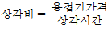
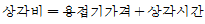
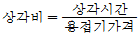
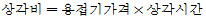
(정답률: 알수없음)
68. 두께 t = 15mm, 폭 ℓ = 200mm 인 강판 2매를 그림과 같이 전면 필릿용접이음으로 완전용입 용접을 하고, 축방향에서 P = 5000N 을 작용하였을 때 용접부에 발생하는 응력은 약 몇 파스칼(Pascal)인가?
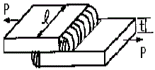
- 0.83×106 Pa
- 1.18×106 Pa
- 2.36×106 Pa
- 0.59×106 Pa
(정답률: 알수없음)
69. 응력집중에 관한 내용이 아닌 것은?
- 용접이음에 소성변형이 생기면 응력집중이 작아진다.
- 이음의 정적 강도에 영향을 받는다.
- 용접 끝 (TOE OF WELD) 부분에 국부적으로 일어난다.
- 피로강도에 크게 영향을 미친다.
(정답률: 알수없음)
70. 용접이음 설계를 할 때의 주의 사항으로 옳은 것은?
- 용접작업에 지장을 주지 않도록 공간을 두어야 한다.
- 용접은 될 수 있는 대로 필릿용접을 하도록 한다.
- 판두께가 다를 때에는 경사 테이퍼없이 얇은 쪽에 용접 홈을 만들어 용접을 하도록 한다.
- 용접선은 될 수 있는 한 교차되도록 하고 한쪽으로 집중되게 접근하여 설계한다.
(정답률: 알수없음)
71. 여러잔류응력 측정법 중 시험편을 절단하는 방법은?
- 이완법
- X선 회절법
- 응력특성법
- 균열법
(정답률: 50%)
72. 금속 표면에 소성 변형을 주어 잔류 응력을 경감시키는 방법은?
- 롤링(rolling)
- 피닝(peening)
- 그라인딩(grinding)
- 노칭(notching)
(정답률: 85%)
73. 용접시험 중 용접성(weldability) 시험에 해당되지 않는 것은?
- 노치취성 시험
- 용접연성 시험
- 용접균열 시험
- 천공 시험
(정답률: 알수없음)
74. 용접부의 온도 변화를 가장 올바르게 설명한 것은
- 박판은 후판에 비하여 열영향부의 범위가 훨씬 좁고 급랭도 커진다.
- 박판에서는 잔류응력이 많이 발생하고 후판에서는 용접변형의 염려가 크다.
- 후판은 박판에 비하여 열영향부의 범위가 훨씬 좁고 급랭도 커진다.
- 용접변형과 잔류응력은 박판 및 후판에서 거의 비슷하게 발생된다.
(정답률: 알수없음)
75. 다음 중 그 성분량을 일정 이상으로 첨가하는 경우에 인장강도와 경도를 증가시키는 반면, 용접성을 떨어뜨리는 화학 성분은?
- 실리콘(Si)
- 유황(S)
- 탄소(C)
- 인(P)
(정답률: 알수없음)
76. V형 맞대기 용접에서, 판두께가 t(㎜)이고,용접선의 유효 길이가 L(㎜), 압축응력이 σ(kgf/㎜2)인 경우, 완전용입으로 고려할 때 용접선 방향에 직각으로 작용하는 압축하중 P(㎏f)를 구하는 식은?
- P = σㆍLㆍt
(정답률: 알수없음)
77. 다음 그림에서 용접부의 용입(penetration)을 나타내는 것은?
- (1)
- (2)
- (3)
- (4)
(정답률: 알수없음)
78. V형 맞대기 용접죠인트에서 인장하중 5ton이 작용하고 모재의 두께가 12㎜, 용접길이가 100㎜일때 용접부에 발생하는 응력은 얼마인가? (단,인장하중은 용접선에 수직하게 작용한다.)
- 약 2.41kgf/㎜2
- 약 4.16kgf/㎜2
- 약 12.4kgf/㎜2
- 약 24.16kgf/㎜2
(정답률: 알수없음)
79. 다음중 용접부에 발생하는 잔류응력과 용접변형 관계를 가장 올바르게 설명한 것은?
- 강도상 중요한 후판에서는 용접변형이 쉽게 발생하고, 박판에서는 잔류응력의 발생 염려가 크다.
- 박판에서는 용접변형이 적게 되는 시공법을 이용하고, 후판에서는 잔류응력의 발생이 적게되는 시공법을 이용한다.
- 용접변형이 크게 되면 용접균열의 발생이 쉽고, 잔류 응력은 구속을 크게 하면 감소된다.
- 용착법에 의한 잔류응력의 경감법은 후퇴법이 가장 좋고, 용접변형의 경감법은 비석법에 의한 것이 가장 좋다.
(정답률: 알수없음)
80. 용접잔류 응력을 완화시키는 방법으로서 가장 효과가 있는 것은?
- 선상 가열법
- 국부 열처리
- 역변형
- 예열
(정답률: 알수없음)
5과목: 용접일반 및 안전관리
81. 미그(MIG) 용접에서 아크 길이의 자기제어(self regulation) 가 일어나는 가장 큰 이유는?
- 온도의 차이
- 정전압 방식
- 정전류 방식
- 상승특성 방식
(정답률: 알수없음)
82. 모재를 녹이지 않고 접합하는 것은?
- 가스 절단
- 심 용접
- 납땜법
- 전자 빔용접
(정답률: 60%)
83. 투과법, 펄스법, 공진법 등으로 시험하는 비파괴검사는?
- 초음파 검사
- 자기검사
- 와류검사
- 방사선검사
(정답률: 알수없음)
84. 피복아크 용접봉을 이용한 용접시 용적은 미세하며 용적수가 많은 이행 형태는?
- 미세 이행형
- 핀치효과 이행형
- 단락 이행형
- 스프레이 이행형
(정답률: 알수없음)
85. 원판상의 로울러 전극사이에 2장의 강판을 겹쳐 놓고 가압통전하면서 전극을 회전시켜 연속 접합하는 용접법은?
- 플래시 용접
- 업셋 용접
- 심 용접
- 프로젝션 용접
(정답률: 알수없음)
86. 서브머지드 용접(submerged arc welding)에 대한 설명 중 옳은 것은?
- 잠호용접(潛狐鎔接)이라고도 하며 용접부의 품질이 매우 좋은 용접법이다.
- 높은 용접능률을 낼 수 있는 용접법이며 입열량이 비교적 낮다.
- 주로 비철재료의 용접에만 쓰이는 것이다.
- 아크용접이기는 하지만 실제로 아크의 발생을 수반하지 않는 용접법이다.
(정답률: 알수없음)
87. 용접작업중에 발생하는 흄(Fume)은 인체에 해로운 것으로 알려져 있다. 다음 중 흄이 가장 많이 발생하는 용접법은?
- 미그용접(MIG welding)
- 서브머지드아크용접(Submerged arc welding)
- 솔리드와이어에 의한 탄산가스아크용접
- 플럭스코어드와이어에 의한 탄산가스아크용접
(정답률: 82%)
88. 정격 2차 전류 200[A], 정격사용율 40%의 아크 용접기로 150[A]의 용접전류를 사용하여 용접하는 경우의 허용 사용률(η)은 몇 % 정도인가?
- 약 71%
- 약 75%
- 약 80%
- 약 85%
(정답률: 알수없음)
89. 피복아크용접용 전원으로서 주로 많이 사용되는 것은?
- 정전압특성전원
- 수하특성전원
- 부저항특성전원
- 정전력특성전원
(정답률: 알수없음)
90. 아크용접기는 주위공기의 온도가 얼마 이하가 될 때 설치해서는 안 되는가?
- 5℃
- 0℃
- -5℃
- -10℃
(정답률: 알수없음)
91. 두꺼운 철판의 대입열,수직용접에 가장 적당한 용접방법은?
- 탄산가스(CO2) 용접
- 일렉트로 슬랙(electroslag) 용접
- 전자빔(beam) 용접
- 피복 아크 용접
(정답률: 알수없음)
92. AW400, 2차무부하전압 80V, 아크전압 40V, 아크전류 400A, 내부손실 4㎾ 인 교류아크용접기를 사용할 경우 역률과 효율은 각각 얼마인가?
- 역률 62.5%, 효율 80%
- 역률 80.0%, 효율 62.5%
- 역률 50%, 효율 100%
- 역률 100%, 효율 50%
(정답률: 알수없음)
93. 산소의 성질 중 틀린 것은?
- 무색, 무취, 무미의 기체이다.
- 산소 자체는 타지 않는다.
- 공기보다 약간 무겁다.
- 210℃에서 50기압 이상 압축하면 담황색의 액체로 된다.
(정답률: 알수없음)
94. 아크용접에서 감전사고 방지대책 중 옳지 않은 것은?
- 절연형 홀더를 사용할 것
- 2차 무부하 전압이 높은 용접기를 사용할 것
- 용접기 단자와 케이블 접속부분을 완전 절연시킬 것
- 손상이 없는 적정한 굵기의 케이블을 사용할 것
(정답률: 80%)
95. 용접작업중 감전의 위험을 방지하기 위한 기기는?
- 핫 스타트 아크장치
- 자동장치
- 원격제어장치
- 전격방지기
(정답률: 알수없음)
96. 음극과 양극의 두전극을 일정한 간격으로 떼어놓고 전류를 통하면 두전극 사이에 불꽃방전이 일어나는 것은?
- 전류
- 아크
- 음이온
- 양이온
(정답률: 100%)
97. 직류용접기에서 정전압특성을 갖는 용접은?
- 실드메탈 아크 용접(SMAW)
- 텅그스텐 아크 용접(GTAW)
- 플라즈마 아크 용접(PAW)
- 가스메탈 아크 용접(GMAW)
(정답률: 알수없음)
98. 피복 아크용접에서 아크전압 30V, 아크전류 100A, 용접속도 40cm/min 일 때, 용접입열은?
- 1.2 kJ/cm
- 4.5 kJ/cm
- 750 cal/cm
- 1333.3 cal/cm
(정답률: 알수없음)
99. 탄산가스 아크 용접의 특성 중 틀린 것은?
- 용입이 깊다.
- 플락스가 없으므로 용착효율이 높다.
- 옥외 작업성이 양호하다.
- 용착속도가 빠르다.
(정답률: 알수없음)
100. 자기 쏠림(아크 블로우)의 방지대책으로 적합하지 않은 것은?
- 아크 길이를 짧게 한다.
- 교류용접을 하지 말고 직류용접을 한다.
- 접지점(Earth)을 용접부에서 될수있는 한 멀리한다.
- 장대한 용접에서 후퇴용접으로 용착한다.
(정답률: 알수없음)